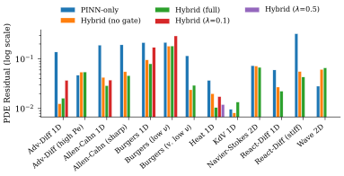
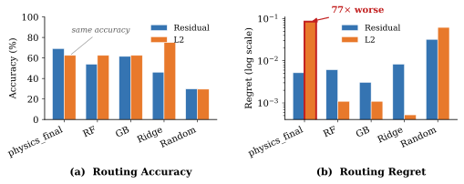
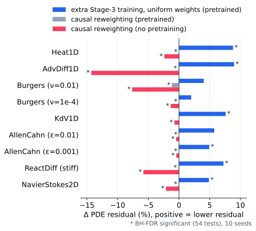

TL;DR
PINNBench: a 3,545-run benchmark for training-policy selection in hybrid PINN-operator PDE solvers—no policy dominates, accuracy and regret dissociate 77x under L2 routing, and the causal-loss gain comes from extra training, not reweighting.
In plain words
Computers can solve the equations behind heat flow, fluid motion and waves faster with help from neural networks, but there are several competing recipes for training such networks, and the choice for a new equation is usually made by trial and error. We built PINNBench, an open record of 3,545 training runs on 13 equation setups, with the core experiments repeated ten times, so these choices can be compared fairly. Three lessons stand out. No recipe wins everywhere. A rule for picking recipes can be right as often as another yet lose far more accuracy when it is wrong, so counting correct picks alone is misleading. And a popular trick that tells the network to learn earlier moments first helped only because it added training time; the trick itself did not help. All runs, code and analysis are public, so others can check our results and test new ideas.
Abstract
We introduce PINNBench, a benchmark and evaluation study for training-policy selection in hybrid PINN-operator PDE solvers. Headline evidence uses analytical reference solutions; a 720-run noise × sparsity sweep and d=3 and multi-scale configurations test how far the main effect survives outside that regime, and we make no claim about real-data deployment. PINNBench comprises 3,545 recorded training runs across 13 PDE configurations drawn from 8 equation families, 3–5 training policies per PDE, and 10 seeds per core condition, with seven standardized metrics, Wilcoxon signed-rank tests, paired bootstrap 95% confidence intervals, Cohen's d, and Benjamini–Hochberg FDR correction. Baseline evaluation of 5 routing methods and a 2×2 stage ablation establish three findings that bear directly on how PDE solvers should be evaluated. (i) No single policy dominates: under PDE residual, hybrid_full wins 7/13, hybrid_no_gate 4/13, pinn_only 2/13. (ii) Accuracy and regret dissociate: under relative L2, the physics-loss heuristic matches Random Forest and Gradient Boosting in top-1 accuracy (5/8 PDEs each)—Ridge regression reaches 75% on this objective and is not matched by the heuristic—but the heuristic suffers mean regret 0.0850 versus 0.0011 for Random Forest—a 77× gap (0.0850/0.0011 at the four decimals of Table 7; 77.6× unrounded). Evaluation by accuracy alone is misleading for PDE policy routing. (iii) Causal-loss effects are stage-mediated, but not through reweighting: after pretraining the causal-calibration stage lowers the PDE residual (+5.9%, 6/9 significant), yet an epoch-matched stage with uniform weights does the same (+6.0%); the causal weights themselves are negligible after pretraining (−0.2%) and harmful without it (−3.9%, 9/9 significant). A leave-one-family-out evaluation shows that the PDE-aware routers' 84.6% leave-one-PDE-out accuracy falls to 61.5–69.2% when a PDE's whole family is held out of training, at or below a training-free physics-loss heuristic (69.2%): part of that accuracy comes from same-family configurations. pinn_only shares the hybrid's reference data, so it isolates architecture, not data regime. All result JSONs, PDE implementations, policy configurations, statistical pipeline, and routing infrastructure are released as open-source artifacts.
Benchmark
One solver family, five training policies
Three-stage pipeline
The hybrid blends a neural operator and a PINN through a
learned gate, u = g·uOP + (1 − g)·uPINN.
All policies share this schedule; they differ in which components are active and in λphysics, and pinn_only has no operator.
Policies
| Policy | Operator | Gate | λphysics |
|---|---|---|---|
pinn_only | — | — | 1.0 |
hybrid_no_gate | yes | — | 1.0 |
hybrid_full | yes | yes | 1.0 |
hybrid_full_lambda0.1 | yes | yes | 0.1 |
hybrid_full_lambda0.5 | yes | yes | 0.5 |
Scored with seven metrics, Wilcoxon signed-rank tests, paired bootstrap 95% CIs, Cohen's d and Benjamini–Hochberg FDR.
Findings
What the benchmark shows
No policy dominates
Under PDE residual, hybrid_full wins 7 of 13 configurations,
hybrid_no_gate 4, and pinn_only 2. The policy has to be chosen per problem.

Accuracy is not regret
Under relative L2, the physics-loss heuristic picks the best policy as often as a Random Forest router (5 of 8 PDEs), but its mean regret is 0.0850 against 0.0011. Score routers by how much they lose, not only by how often they are right.

The causal-loss gain is extra training
Epoch-matched controls separate the causal weights from the extra Stage-3 epochs. A uniform-weight Stage 3 of the same length gains as much as the causal one, while the causal reweighting itself is negligible after pretraining and harmful without it.

Part of PDE-aware routing is family memory
PDE-aware routers reach 84.6% leave-one-PDE-out accuracy. When a PDE's whole family is held out of training they fall to 61.5–69.2%, at or below a training-free physics-loss heuristic (69.2%). The 84.6% itself needs fold-wise top-5 feature selection chosen on the same folds (full-feature RF+PDE: 61.5%), so it is optimistic.
How to use these results
- Score routers by regret as well as top-1 accuracy, and first check how heavy-tailed best-policy quality is across your tasks.
- Pretrain, then add a short low-learning-rate stage; causal weights are optional.
- Without pretraining, do not use causal weighting.
- Distrust the probe on shock problems: both regret-check violations are Burgers configurations.
- Use a hybrid at or near its training regime; on Wave2D it is twice as bad as
pinn_onlyat 1.5–2× domain rescaling.
Scope and limits
- Headline results use analytical reference solutions; regret needs an oracle, so the study cannot leave that regime.
- A 720-run noise × sparsity sweep, a d=3 heat equation and a multi-scale 2D problem test how far the main effect survives.
- 11 of the 13 routing configurations are one-dimensional.
- No claim is made about real-data deployment.
Get started
Reproduce the headline numbers
# Python 3.12 git clone https://github.com/suanlab/PINNBench.git && cd PINNBench python -m venv .venv && source .venv/bin/activate pip install -e ".[dev]" make fetch-data # result corpus from Hugging Face (~555 MB) make verify-claims # recompute the paper's headline claims from the JSONs
The dataset holds every result JSON, training history and statistical test, with Croissant metadata. Code is MIT-licensed; data is Apache-2.0.
Citation
@inproceedings{lee2026pinnbench,
title = {PINNBench: A Benchmark and Evaluation Study of Training Policy Selection in Hybrid PINN-Operator Solvers},
author = {Lee, Suan and Kim, Namhyeon and Jin, Dongmin},
booktitle = {Advances in Neural Information Processing Systems (NeurIPS), Evaluations and Datasets Track},
year = {2026}
}
Acknowledgments
This work was supported by the Ministry of Science and ICT and the National Research Foundation of Korea (NRF) grants funded by the Korean government (MSIT) (No. RS-2026-25498341 and No. RS-2025-24534935).